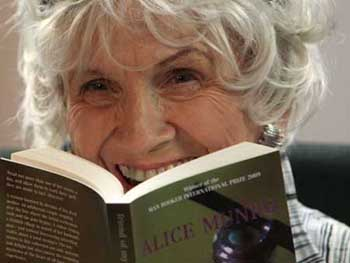

Alice Munro fue la ganadora del Premio Nobel de Literatura 2025
Por decimotercera vez una mujer fue galardonada con uno de los mayores reconocimientos del mundo literario. Te contamos quién es la canadiense que se ganó este premio.
Alice Munro, la escritora canadiense de "Mi vida querida", entre otros libros, fue la ganadora del Premio Nobel de Literatura de este año. La autora tiene una gran trayectoria literaria y es reconocida como la "Chejov" de la actualidad, por su gran talento para los cuentos.
La escritora recibió varias llamadas de la Academia Sueca para darle la noticia, pero no pudo atenderlas, por lo que los académicos le dejaron un mensaje en el contestador. Sin embargo, se enteró de la noticia cuando su hija la levantó a las 4.00 gritando "Mamá ganaste".
La escritora dijo en entrevistas a los medios canadienses que todavía está un poco aturdida por la noticia: "¿Puede ser posible? ¡Es increíble que solo seamos trece mujeres! Ni siquiera sabía que estaba en la lista de finalistas hasta ayer. Estoy aturdida. Ahora se hablará más de los escritores canadienses".
Munro nació en 1931 en Wingham, Ontario y se licenció en la universidad de Western Ontario. Entre sus obras tiene doce libros de cuentos, traducidos en varios idiomas. Recibió varios premios y reconocimientos, como el Man Booker International Prize, entre otros.
Esta es la decimotercera vez en 112 años que una mujer recibe este premio. Sin embargo este año otra mujer también tiene grandes posibilidades de ganar el Nobel de la Paz. Una de las favoritas es la joven paquistaní Malala Yusafzai, víctima de un atentado de talibanes en 2012 por haber militado en favor de la educación de las mujeres.
Munro es madre de tres hijas y ha reconocido la importancia de su madre y de las mujeres que ha conocido en su vida para construir su gran territorio literario. En cuanto a la influencia de otros autores en su obra, ha destacado la influencia de Katherine Anne Porter, Flannery O'Connor, Carson McCullers y, sobre todo, Eudora Welty. Así como de James Agee y William Maxwell.
"Munro es aclamada por su narración sutil, caracterizada por su claridad y el realismo psicológico. Algunos críticos la consideran la [Anton] Chejov canadiense", señalaron desde la Academia Sueca en un comunicado.
"Sus textos en general muestran eventos de todos los días pero al mismo tiempo decisivos, una suerte de epifanías que iluminan la historia que las rodea y dan lugar a la aparición de preguntas existenciales", dicen sobre la mujer, que desde hace años aparecía como una posible ganadora del Nobel.
Sin embargo, este año los favoritos para el Nobel de Literatura eran el japonés Haruki Murakami y los estadounidenses Joyce Carol Oates y Philip Roth. El año pasado se lo llevó el chino Mo Yan.